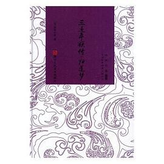
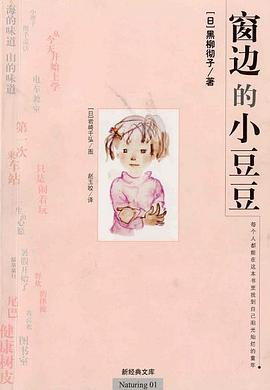
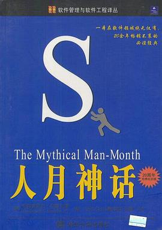

观察一只虫，读懂整个自然；被理解的孩子，才能长成自己
只精选3本 · 本本经典
蝉在地下潜伏四年，只为阳光下歌唱五个星期；螳螂捕食时会摆出祈祷的姿势；蜜蜂能记住每一朵花的位置……法布尔不是冷冰冰的科学家，而是一个蹲在地上看蚂蚁搬家看了几十年的"老顽童"。这本书让男孩明白：认真观察这个世界，本身就是一件很酷的事。

小豆豆因为"太调皮"被原来的学校退学，却在巴学园里找到了全世界最好的校长。校长听她讲了四个小时的话，没有打一次哈欠。这本书让男孩知道：你不是"问题孩子"，你只是还没遇到懂你的大人。被理解，是成长最好的养分。

油麻地的草房子里，住着一个叫桑桑的男孩。他捉弄同学、拆父亲的蚊帐做渔网、在夏天穿上厚厚的棉衣吸引注意……然后，他慢慢学会了承担、告别和长大。这是中国儿童文学的一座高峰，让男孩在别人的故事里，提前预习自己的成长。